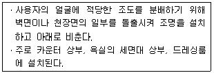
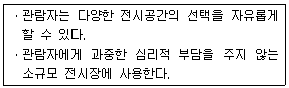
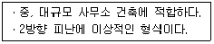
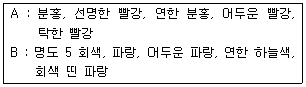

실내건축산업기사 (2014-03-02 기출문제)
1과목: 실내디자인론
1. 균형의 원리에 관한 설명으로 옳지 않은 것은?
- 수직선이 수평선보다 시각적 중량감이 크다.
- 크기가 큰 것이 작은 것보다 시각적 중량감이 크다.
- 불규칙적인 형태가 기하학적 형태보다 시각적 중량감이 크다.
- 복잡하고 거친 질감이 단순하고 부드러운 것보다 시각적 중량감이 크다.
(정답률: 54%)

2. 디자인 원리 중 조화에 관한 설명으로 옳지 않은 것은?
- 단순조화는 대체적으로 온화하며 부드럽고 안정감이있다.
- 복합조화는 다양한 주제와 이미지들이 요구될 때 주로 사용된다.
- 대비조화에서 대비를 많이 사용할수록 뚜렷하고 선명한 이미지를 준다.
- 유사조화는 형식적, 외형적으로 시각적인 동일 요소의 조합을 통하여 성립한다.
(정답률: 60%)
3. 다음 설명에 알맞은 건축화 조명의 종류는?

- 광창 조명
- 코브 조명
- 광천장 조명
- 캐노피 조명
(정답률: 58%)
4. 질감에 관한 설명으로 옳지 않은 것은?
- 질감의 선택시 고려해야 할 사항은 스케일, 빛의 반사와 흡수 등의 요소이다.
- 질감은 실내디자인을 통일시키거나 파괴할 수도 있는 중요한 디자인 요소이다.
- 좁은 실내 공간을 넓게 느껴지도록 하기 위해서는 표면이 곱고 매끄러운 재료를 사용하는 것이 좋다.
- 시각으로 지각할 수 있는 어떤 물체 표면상의 특징을 양감이라고 하며, 촉각으로 지각할 수 있는 것을 질감이라고 한다.
(정답률: 57%)
5. 기하학적으로 취급한 점, 선, 면, 입체 등이 속하는 형태의 종류는?
- 현실적 형태
- 이념적 형태
- 추상적 형태
- 3차원적 형태
(정답률: 40%)
6. 이미지 스케치에 관한 설명으로 옳지 않은 것은?
- 전체적인 이미지를 알 수 있도록 스케치하는 것이 중요하다.
- 준비된 여러 가지 자료를 참고하여 디자인할 부위를 표현한다.
- 투시도 작도 이전에 그리는 3차원적 표현방법이라고 할 수 있다.
- 공간별 이미지를 스케치하되 다른 디자인을 재해석한 모방은 곤란하다.
(정답률: 63%)
7. 쇼룸(show room)에 관한 설명으로 옳지 않은 것은?
- 일반적으로 PR보다는 판매를 위주로 한다.
- 일반 매장과는 다르게 공간적으로 여유가 있다.
- 쇼룸의 연출은 되도록 개념, 대상물, 효과라는 3단계가 종합적으로 디자인되어야 한다.
- 상업적 쇼룸에는 필요한 경우 사용이나 작동을 위한 테스팅 룸(testing room)을 배치한다.
(정답률: 69%)
8. 상점의 판매형식 중 측면판매에 관한 설명으로 옳지 않은 것은?
- 대면판매에 비해 넓은 진열면적의 확보가 가능하다.
- 판매원이 고정된 자리 및 위치를 설정하기가 어렵다.
- 소형으로 고가품인 귀금속, 시계, 화장품 판매점 등에 적합하다.
- 고객이 직접 진열된 상품을 접촉할 수 있는 관계로 상품의 선택이 용이하다.
(정답률: 63%)
9. 다음의 아파트 평면형식 중 프라이버시가 가장 양호한 것은?
- 홀형
- 집중형
- 편복도형
- 중복도형
(정답률: 58%)
10. 거리, 길이, 방향, 크기의 착시와 같은 기하학적 착시의 사례에 속하지 않는 것은?
- 분트 도형
- 뮐러-리어 도형
- 포겐도르프 도형
- 펜로즈의 삼각형 2
(정답률: 45%)
11. 다음 중 주택 부엌의 작업순서에 따른 가구 배치방법으로 가장 알맞은 것은?
- 준비대 - 개수대 - 조리대 - 가열대 - 배선대
- 준비대 - 조리대 - 개수대 - 가열대 - 배선대
- 준비대 - 개수대 - 가열대 - 조리대 - 배선대
- 준비대 - 가열대 - 개수대 - 조리대 - 배선대
(정답률: 72%)
12. 다음 설명에 알맞은 전시공간의 평면형태는?

- 원형
- 선형
- 부채꼴형
- 직사각형
(정답률: 51%)
13. 공간의 레이아웃(lay-out)과 가장 밀접한 관계를 가지고 있는 것은?
- 재료계획
- 동선계획
- 설비계획
- 색채계획
(정답률: 73%)
14. 날개의 각도를 조절하여 일광, 조망, 시각의 차단정도를 조정하는 것은?
- 드레리퍼리
- 롤 블라인드
- 로만 블라인드
- 베네시안 블라인드
(정답률: 60%)
15. 선의 종류별 조형효과로 옳지 않은 것은?
- 사선 - 생동감
- 곡선 - 우아, 풍요
- 수직선 - 평화, 침착
- 수평선 - 안정, 편안함
(정답률: 68%)
16. 각종 의자에 관한 설명으로 옳지 않은 것은?
- 풀업체어는 필요에 따라 이동시켜 사용할 수 있는 간이의자이다.
- 오토만은 스툴의 일종으로 편안한 휴식을 위해 발을 올려놓는데도 사용된다.
- 세티는 고대 로마시대 음식물을 먹거나 잠을 자기 위해 사용했던 긴 의자이다.
- 라운지 체어는 비교적 큰 크기의 의자로 편하게 휴식을 취할 수 있는 안락의자이다.
(정답률: 65%)
17. 조명의 연출기법 중 강조하고자 하는 물체에 의도적인 광선을 조사시킴으로써 광선 그 자체가 시각적인 특성을 지니게 하는 기법은?
- 강조 기법
- 월워싱 기법
- 빔플레이 기법
- 그림자 연출기법
(정답률: 63%)
18. 다음 설명에 알맞은 사무소 건축의 코어형식은?

- 외코어형
- 중앙코어형
- 편심코어형
- 양단코어형
(정답률: 69%)
19. 실내디자인의 계획조건 중 외부적 조건에 속하지 않는 것은?
- 계획대상에 대한 교통수단
- 소화설비의 위치와 방화구획
- 기둥, 보, 벽 등의 위치와 간격치수
- 실의 규모에 대한 사용자의 요구사항
(정답률: 61%)
20. 장식물의 선정과 배치상의 주의사항으로 옳지 않은 것은?
- 좋고 귀한 것은 돋보일 수 있도록 많이 진열한다.
- 여러 장식품들이 서로 조화를 이루도록 배치한다.
- 계절에 따른 변화를 시도할 수 있는 여지를 남긴다.
- 형태, 스타일, 색상 등이 실내공간과 어울리도록 한다.
(정답률: 74%)
2과목: 색채 및 인간공학
21. 다음 중 인체측정자료의 응용에 있어 최대치를 이용하여 디자인하는 경우로 가장 적절한 것은?
- 문의 높이
- 의자의 높이
- 선반의 높이
- 조작 버튼까지의 거리
(정답률: 64%)
22. 다음 중 기계가 인간을 능가하는 기능에 해당하는 것은?
- 반복적인 작업을 신뢰성 있게 수행한다.
- 상황적 요구에 따라 순간적인 결정을 한다.
- 관찰을 통하여 일반화하여 귀납적으로 추리한다.
- 주위의 이상이나 예기치 못한 사건들을 감지한다.
(정답률: 75%)
23. 다음 중 조명의 4가지 요소에 해당하지 않는 것은?
- 시간
- 광도
- 대비
- 대상물
(정답률: 51%)
24. 다음 중 인간공학적 연구대상과 가장 거리가 먼 것은?
- 시각 표시장치
- 청각 표시장치
- 제어 장치
- 엔진 장치
(정답률: 73%)
25. 다음 중 일반적으로 피로할 때의 자세 변화와 가장 거리가 먼 것은?
- 한 숨을 쉰다.
- 발을 끌면서 걷는다.
- 일어서기가 어려워한다.
- 상체가 곧게 세워진다.
(정답률: 77%)
26. 인간 오류(human error)의 근원적 대책에 대한 설명으로 적절하지 않은 것은?
- 사전에 마련된 점검표(checklist)를 사용하여 위험요인을 점검하고 제거시킨다.
- 인간이 오류를 범하여도 안전하게 작업하는 fool-proof 개념을 도입하여 작업장을 설계한다.
- 오류를 범하는 작업자는 다시 유사한 오류를 범할 가능성이 높으므로 반드시 작업에서 제외한다.
- 고장이 발생하여도 시스템이 안전하게 작동하도록 설계하는 fail-safe 개념을 도입하여 작업장을 설계한다.
(정답률: 71%)
27. 다음 중 역치(threshold value)에 대한 설명으로 가장 적절한 것은?
- 표시장치의 설계와 역치는 아무런 관계가 없다.
- 에너지의 양이 증가할수록 차이역치는 감소한다.
- 역치는 감각에 필요한 최소량의 에너지를 말한다.
- 표시장치를 설계할 때는 신호의 강도를 역치 이하로 설계하여야 한다.
(정답률: 57%)
28. 다음 중 적록색맹에 관한 설명으로 틀린 것은?
- 녹색맹은 녹색과 적색을 구별하지 못한다.
- 녹색맹은 정상인보다 보이는 파장의 범위가 좁다.
- 적색맹은 스펙트럼상의 적색쪽 끝이 황색으로 보인다.
- 적색맹은 적색이나 청록색을 회색과 구별하지 못한다.
(정답률: 55%)
29. 다음 중 문자 - 숫자 표시 설계시 고려해야 할 요인으로 옳은 것은?
- 계기판의 숫자나 문자에는 장식(裝飾)을 해야 한다.
- 계기판의 문자에는 반드시 대문자를 사용해야 한다.
- 문자판은 왼편에서 오른편으로 읽을 수 있도록 수평으로 부착해야 한다.
- 일반적으로 숫자나 문자는 클수록 눈금의 바탕이나 조명을 염려해야 한다.
(정답률: 62%)
30. 다음 중 한국인 인체치수조사 사업에 있어 표준인체 측정법에 따라 허리 높이를 측정하는 방법으로 옳은 것은?
- 의자에 앉은 자세에서 바닥부터 허리옆점까지의 수직거리를 측정한다.
- 누운 자세에서 취하고, 발바닥부터 허리앞점까지의 거리를 측정한다.
- 인체공학적 선 자세를 취하고, 피측정자의 허리앞점과 바닥 사이의 수직거리를 측정한다.
- 선 자세에서 상체를 최대한 아래로 굽힌 후 최대수직높이를 측정한다.
(정답률: 66%)
31. 빛이 프리즘을 통과할 때 나타나는 분광현상 중 굴절현상이 제일 큰 색은?
- 보라
- 초록
- 빨강
- 노랑
(정답률: 63%)
32. 화장한 여성의 얼굴이 형광등 아래에서 보면 칙칙하고 안색이 나쁘게 보이는 이유는?
- 형광등은 단파장계열의 빛을 방출하기 때문
- 형광등에서는 장파장이 강하게 나오기 때문
- 형광등에서는 붉은빛이 강하게 나오기 때문
- 형광등 아래서는 얼굴에 붉은 색조가 강조되어 보이기 때문
(정답률: 58%)
33. 먼셀의 20색상환에서 노랑과 거리가 가장 먼 위치의 색상명은?
- 보라
- 남색
- 파랑
- 청록
(정답률: 59%)
34. 색채계에서 “규칙적으로 선택된 색은 조화된다.”라는 원리는?
- 동류성의 원리
- 질서의 원리
- 친근성의 원리
- 명료성의 원리
(정답률: 74%)
35. 색채의 시인성에 가장 영향력을 미치는 것은?
- 배경색과 대상색의 색상차가 중요하다.
- 배경색과 대상색의 명도차가 중요하다.
- 노란색에 흰색을 배합하면 명도차가 커서 시인성이 높아진다.
- 배경색과 대상색의 색상차이는 크게 하고, 명도차는 두지 않아도 된다.
(정답률: 56%)
36. 색채심리에 관한 설명 중 틀린 것은?
- 색채의 중량감은 주로 채도에 의해 좌우된다.
- 난색은 흥분색, 한색은 진정색이다.
- 대체로 난색계는 친근감을, 한색계는 소원(疎遠)감을 준다.
- 두 가지 색이 인접하여 있을 때, 서로 영향을 주어 그 차이가 강조되어 보이는 것이 색채대비 효과이다.
(정답률: 63%)
37. 인접한 색이나 혹은 배경색의 영향으로 먼저 본 색이 원래의 색과 다르게 보이는 현상은?
- 연상작용
- 동화현상
- 대비현상
- 색순응
(정답률: 43%)
38. 분리배색효과에 대한 설명이 틀린 것은?
- 색상과 톤이 유사한 배색일 경우 세퍼레이션 컬러를 선택하여 명쾌한 느낌을 줄 수 있다.
- 스테인드글라스는 세퍼레이션 색채로 무채색을 이용한 금속색을 적용한 대표적인 예이다.
- 색상과 톤의 차이가 큰 콘트라스트 배색인 빨강과 청록사이에 검은색을 넣어 온화한 이미지를 연출한다.
- 슈브럴의 조화이론을 기본으로 한 배색방법이다.
(정답률: 50%)
39. 다음에 제시된 A, B 두 배색의 공통점은?

- 다색배색으로 색상차이가 동일한 유사색 배색이다.
- 동일한 색상에 톤의 변화를 준 톤온톤 배색이다.
- 빨간색의 동일 채도 배색이다.
- 파란색과 무채색을 이용한 강조 배색이다.
(정답률: 68%)
40. 가법혼색의 3원색은?
- RED, YELLOW, CYAN
- MAGENTA, YELLOW, BLUE
- RED, GREEN, BLUE
- RED, YELLOW, GREEN
(정답률: 66%)
3과목: 건축재료
41. 드라이비트 용 도료에 대한 설명으로 옳지 않은 것은?
- 수용성 아크릴 수지와 천연 골재가 주원료이다.
- 단열성이 우수하고, 부착성이 좋다.
- 일반적으로 도료 경화 후 무광택 래커나 폴리우레탄래커 등으로 마감코팅한다.
- 내수성, 내약품성, 내구성이 우수하다.
(정답률: 29%)
42. 다음 건축재료 중 열전도율이 가장 작은 것은?
- 시멘트 모르타르
- 알루미늄
- ALC
- 유리섬유
(정답률: 48%)
43. 시멘트콘크리트 제품 중 대리석의 쇄석을 종석으로 하여 대리석과 같이 미려한 광택을 갖도록 마감한 것은?
- 석면
- 테라조
- 질석
- 고압벽돌
(정답률: 56%)
44. 방사선 차단성이 가장 큰 금속은?
- 납
- 알루미늄
- 동
- 주철
(정답률: 55%)
45. 고성능 AE 감수제 사용목적과 가장 거리가 먼 것은?
- 응결 촉진제 용도로 사용
- 유동화 콘트리트 제조에 사용
- 고강도 콘크리트의 슬럼프 로스 방지
- 단위수량 대폭 감소 및 고내구성 콘크리트 제조
(정답률: 29%)
46. 경질섬유판의 성질에 관한 설명 중 옳지 않은 것은?
- 가로ㆍ세로의 신축이 거의 같으므로 비틀림이 적다.
- 표면이 평활하고 비중이 0.7 이하이며 경도가 작다.
- 구멍뚫기, 본뜨기, 구부림 등의 2차 가공도 용이하다.
- 펄프를 접착제로 제판하여 양면을 열압건조시킨 것이다.
(정답률: 42%)
47. 콘크리트의 응결경화 촉진제로 쓰이는 것은?
- 염화칼슘
- 리그닌설폰산염
- 인산염
- 산화아연
(정답률: 49%)
48. 기존 건축마감재의 재료성능 한계를 극복하기 위하여 바이오기술, 환경기술 및 나노기술을 융합한 친환경건축마감자재 개발이 활발하게 진행되고 있다. 이 중 기능성 마감소재인 광촉매의 기능과 가장 거리가 먼 것은?
- 원적외선 방출 기능
- 향균ㆍ살균 기능
- 자정(self-cleaning) 기능
- 유기오염물질 분해 기능
(정답률: 49%)
49. 목재의 함수율에 관한 설명으로 옳지 않은 것은?
- 함수율이 30% 이상에서는 함수율의 증감에 따라 강도의 변화가 거의 없다.
- 기건목재의 함수율은 15% 정도이다.
- 목재의 진비중은 일반적으로 2.54 정도이다.
- 목재의 함수율 30% 정도를 섬유포화점이라 한다.
(정답률: 48%)
50. 시멘트와 그 용도와의 관계를 나타낸 것으로 옳지 않은 것은?
- 조강포틀랜드시멘트 - 한중공사
- 중용열포틀랜드시멘트 - 댐공사
- 백색포틀랜드시멘트 - 타일 줄눈공사
- 고로시멘트 - 마감용 착색공사
(정답률: 51%)
51. 건축공사의 일반창유리로 사용되는 것은?
- 석영유리
- 붕규산유리
- 칼라석회유리
- 소다석회유리
(정답률: 53%)
52. 아스팔트 에멀션(asphalt emulsion)이란 어떤 방법으로 만들어진 아스팔트 제품인가?
- 아스팔트를 휘발성 용제에 녹인 것
- 아스팔트를 적당한 온도로 가열하여 용융시킨 것
- 아스팔트를 유화제에 의해 물에 미립자로 분산시킨 것
- 아스팔트에 소량의 모래를 섞고 가열한 것
(정답률: 33%)
53. 물시멘트비가 60%, 단위시멘트량이 300kg/m3일 경우 필요한 단위수량은?
- 150kg/m3
- 180kg/m3
- 210kg/m3
- 340kg/m3
(정답률: 53%)
54. 다음 목재 중 실내 치장용으로 사용하기에 적합하지 않은 것은?
- 느티나무
- 단풍나무
- 오동나무
- 소나무
(정답률: 50%)
55. 콘크리트의 건조수축에 대한 설명으로 옳은 것은?
- 단위수량이 증가하면 건조수축량이 감소한다.
- 부재치수가 클수록 건조수축량이 적다.
- 골재 중에 포함한 미립분이나 점토는 건조수축량을 감소시킨다.
- 습윤양생기간은 길수록 건조수축량을 증가시킨다.
(정답률: 21%)
56. 중밀도 섬유판(MDF)의 특징이 아닌 것은?
- 흡음, 단열성능이 우수하다.
- 천연원목에 비하여 가격이 저렴하다.
- 갈라짐 등의 외관상 결점이 없다.
- 내수성이 뛰어나다.
(정답률: 41%)
57. 흑색 또는 회색 등이 있으며 얇은 판으로 뜰 수도 있어 천연슬레이트라 하며 치밀한 방수성이 있어 지붕, 벽, 재료로 쓰이는 것은?
- 감람석
- 응회석
- 점판암
- 안산암
(정답률: 49%)
58. 목재가 건축재료로서 갖는 장점에 해당되지 않는 것은?
- 비강도가 커 기둥ㆍ보 등에 적합하다.
- 건습에 의한 신축변형이 작아 시간경과에 따른 부작용이 없다.
- 종류가 많고 각각 다른 미려한 외관을 갖고 있어 선택의 폭이 넓다.
- 열전도율이 적으므로 보온ㆍ방한ㆍ방서성이 뛰어나다.
(정답률: 53%)
59. 목재의 부패에 관한 설명으로 옳지 않은 것은?
- 부패균(腐敗菌)은 섬유질을 분해ㆍ감소시킨다.
- 부패균이 번식하기 위한 적당한 온도는 20 ~ 35℃ 정도이다.
- 부패균은 산소가 없어도 번식할 수 있다.
- 부패균은 습기가 없으면 번식할 수 없다.
(정답률: 57%)
60. 미장작업 시 코너비드(corner bead)는 주로 어디에 사용되는가?
- 천장
- 거푸집
- 계단 디딤판
- 기둥의 모서리
(정답률: 61%)
4과목: 건축일반
61. 다음 중 서양의 건축양식이 시대순으로 옳게 나열된 것은?
- 초기기독교 - 비잔틴 - 로마네스크 - 고딕
- 초기기독교 - 로마네스크 - 비잔틴 - 고딕
- 초기기독교 - 고딕 - 비잔틴 - 로마네스크
- 초기기독교 - 비잔틴 - 고딕 - 로마네스크
(정답률: 55%)
62. 소방법령에 의한 피난층의 정의로 옳은 것은?
- 피난기구가 설치된 층을 말한다.
- 곧바로 지상으로 갈 수 있는 출입구가 있는 층을 말한다.
- 비상구가 연결된 층을 말한다.
- 무창층 외의 층을 말한다.
(정답률: 64%)
63. 건축물에 대한 구조안전을 확인하는 경우 건축구조기술사의 협력을 받아야 하는 건축물은?
- 층수가 2층인 건축물
- 기둥과 기둥 사이가 9m인 건축물
- 한쪽 끝은 고정되고 다른 끝은 지지되지 아니한 구조로 된 차양 등이 외벽의 중심선으로부터 2m 돌출된 건축물
- 다중이용 건축물
(정답률: 44%)
64. 건축물의 구조기준 등에 관한 규칙에 따른 조적식구조 칸막이 벽의 두께는 최소 얼마 이상으로 해야 하는 가?
- 9cm
- 12cm
- 15cm
- 20cm
(정답률: 55%)
65. 스프링클러설비를 설치하여야 하는 특정소방대상물에 대한 기준으로 옳은 것은?
- 영화상영관의 경우 면적에 관계없이 전 층
- 판매시설의 경우 연면적 1,000m2 이상인 것은 전 층
- 숙박이 가능한 수련시설로서 해당 용도로 사용되는 바닥면적의 합계가 600m2 이상인 경우 전 층
- 종교시설의 경우 수용인원이 50명 이상인 경우 전 층
(정답률: 40%)
66. 다음 소방시설 중 소화설비가 아닌 것은?
- 자동화재탐지설비
- 스프링클러설비
- 옥외소화전설비
- 소화기구
(정답률: 69%)
67. 배연설비에서의 배연창의 최소 유효면적과 그 유효면적의 합계 기준으로 옳게 짝지어진 것은?
- 1m2 이상, 당해 건축물 바닥면적의 1/50 이상
- 1m2 이상, 당해 건축물 바닥면적의 1/100 이상
- 2m2 이상, 당해 건축물 바닥면적의 1/50 이상
- 2m2 이상, 당해 건축물 바닥면적의 1/100 이상
(정답률: 47%)
68. 로마시대의 주택에 관한 설명으로 옳지 않은 것은?
- 판사(pansa)의 주택 같은 부유층의 도시형 주거는 주로 보도에 면하여 있었다.
- 인술라(insula)에는 일반적으로 난방시설과 개인목욕탕이 설치되었다.
- 빌라(villa)는 상류신분의 고급 교외별장이다.
- 타블리눔(tablinum)은 가족의 중요문서 등이 보관되어 있는 곳이었다.
(정답률: 57%)
69. 벽돌벽체 쌓기에서 입면으로 볼 경우 같은 켜에 벽돌의 길이와 마구리가 번갈아 보이도록 하는 쌓기법은?
- 불식쌓기
- 영식쌓기
- 화란식쌓기
- 미식쌓기
(정답률: 54%)
70. 한국전통건축과 관련된 용어 설명 중 옳지 않은 것은?
- 평방 - 기둥 상부의 창방 위에 놓아 다포계 건물의 주간포작을 설치하기 용이하도록 하기 위한 직사각형 단면의 부재이다.
- 연등천장 - 따로 반자를 설치하지 않고 서까래를 그대로 노출시킨 천장이며, 구조미를 나타낸다.
- 귀솟음 - 기둥머리를 건물 안쪽으로 약간씩 기울여주는 것을 말하며, 오금법이라고도 한다.
- 활주 - 추녀 밑을 받치고 있는 기둥을 말한다.
(정답률: 59%)
71. 방염성능기준 이상의 실내장식물을 설치하여야 하는 특정소방대상물에 해당되지 않는 곳은?
- 12층의 사무소
- 방송통신시설 중 방송국
- 숙박시설
- 15층의 아파트
(정답률: 57%)
72. 표준형 벽돌로 구성한 벽체에서 내력벽 2.5B의 두께는?
- 29cm
- 39cm
- 49cm
- 58cm
(정답률: 57%)
73. 건축물과 건축양식의 연결이 옳지 않은 것은?
- 아크로폴리스(Acropolis) - 그리스건축
- 오벨리스크(Obelisk) - 메소포타미아건축
- 판테온(Pantheon)신전 - 로마건축
- 아미앵(Amiens)성당 - 고딕건축
(정답률: 48%)
74. 마루널 등 목재널판 설치 시 널판 간의 쪽매 방법과 가장 거리가 먼 것은?
- 제혀쪽매
- 반턱쪽매
- 딴혀쪽매
- 평쪽매
(정답률: 45%)
75. 철근콘크리트 구조로서 내화구조가 아닌 것은?
- 두께가 10cm인 벽
- 두께가 8cm인 바닥
- 보
- 지붕
(정답률: 56%)
76. 붉은벽돌의 칠오토막의 크기는?
- 온장의 1/4
- 온장의 1/2
- 온장의 2/3
- 온장의 3/4
(정답률: 61%)
77. 건축물의 바닥면적 합계가 450m2인 경우 주요구조부를 내화구조로 하여야 하는 건축물이 아닌 것은?
- 의료시설
- 노인복지시설
- 오피스텔
- 창고시설
(정답률: 64%)
78. 방염대상물품의 방염성능기준에서 버너의 불꽃을 제거한 때부터 불꽃을 올리며 연소하는 상태가 그칠 때까지 시간은 몇 초 이내인가?
- 5초 이내
- 10초 이내
- 20초 이내
- 30초 이내
(정답률: 55%)
79. 공동주택과 오피스텔의 난방설비를 개별난방방식으로 할 경우의 설치기준으로 옳지 않은 것은?
- 보일러실과 거실사이의 출입구는 그 출입구가 닫힌 경우에는 보일러가스가 거실에 들어갈 수 없는 구조로 한다.
- 보일러실의 윗부분에는 0.5m2 이상의 환기창을 설치한다. (단, 전기보일러실의 경우는 예외)
- 보일러는 거실이외의 곳에 설치하며 보일러를 설치하는 곳과 거실사이의 경계벽 및 출입구는 내화구조로 구획한다.
- 기름보일러를 설치하는 경우에는 기름저장소를 보일러실외의 다른 곳에 설치한다.
(정답률: 50%)
80. 건축물의 피난층 외의 층에서 피난층 또는 지상으로 통하는 직통계단을 설치할 때 거실의 각 부분으로부터 직통계단에 이르는 최대보행거리 기준은? (단, 주요구조부가 내화구조 또는 불연재료로 구성, 16층 이상의 공동주택은 제외)
- 30m 이하
- 40m 이하
- 50m 이하
- 60m 이하
(정답률: 39%)